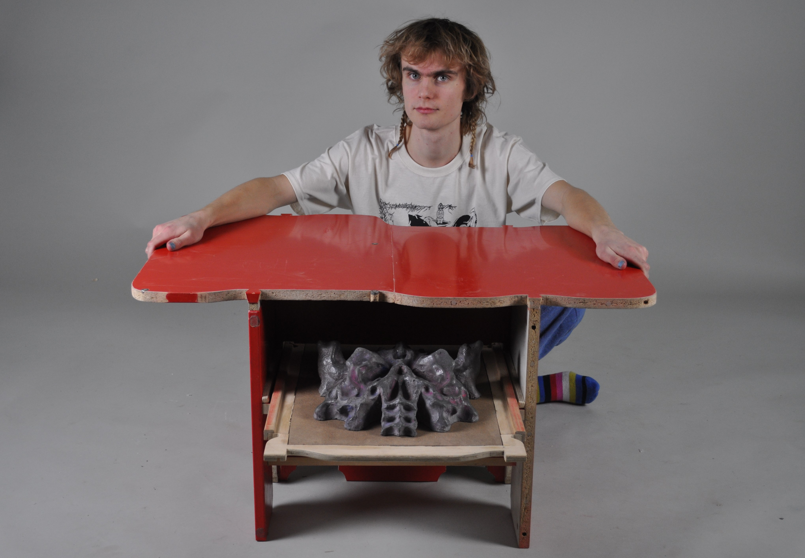

Table from drawer project
2022-02-07 by Ture Goldkuhl
Documentation of a table I made at Nyckelviksskolan around the end of 2021.
Me, a skull & the table
The task
In the woodworking class we were tasked to buy a second hand piece of furniture and deconstruct it, thereafter perhaps forming it into something new. We could only choose to keep its original finish, scrape it or paint black or white, because the shape should be the thing in focus.
Before and after
The build
I started off by disassembling the original furniture. It consisted of five major red blocks, two of which a bit larger. I tried putting them in different ways and was thinking of a chair at first before the idea of a table struck me.
top was a difficult one to plan, but I knew I wanted some shape to coume out of it. I sketched and cut large paper to get a sense of the shape.
I began with these blocks to cut out interesting shapes. I am a sucker for detail and can't really help myself. The small weird cuts were originally going to be circles but I cut this much in the band saw and thought it looked cool. After this I cut almost all the pieces with decorative shapes.
The legs are structured like and 'H' for stability and the middle wall has a hole for the sliding drawer to go through. I put one extra support beam on each side as the middle wall was not the most stable with the hole and the hole construction was able to wiggle a bit since it was in the middle.
I plugged and glued everything together at the end.

Unfortunately my phone broke somewhere at the end of this project so lost most of the pictures from the process. Overall it was a fun build and felt nice to be back in a woodworking-shop with all the large machines. Used the band saw a lot during my cutting decorative shapes-mania. I'm happy with the table but still has not gotten it home since I don't have a car or anything and it's quite heavy. Would really like to use it as a sitting down dining table. (Or if it hurts to much to sit at the floor - a sofa table.)
Update as of 2022-08-28: The table is sadly lost since I did not pick it up during the entire summer. The school has started again for the next year and some friends there reported the table is no longer where it were. I knew it would be thrown away if I didn't pick it up but thought I had more time... Well, maybe it was destined. I do not grief.. much.